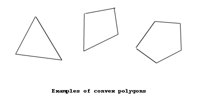
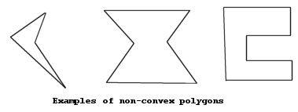
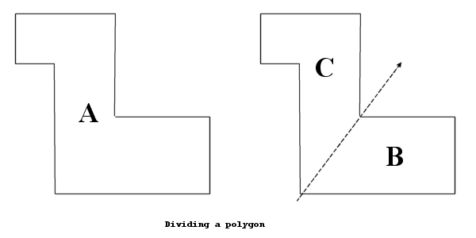
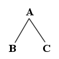
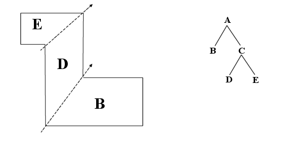
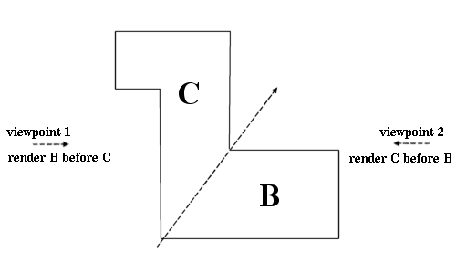

One of the biggest problems facing designers of 3-D rendering engines is that of visibility calculation: only visible walls and objects must be drawn, and they must be drawn in the right order (close walls should be drawn in front of far away walls). More importantly, for applications such as games it is important to develop algorithms which allow a scene to be rendered quickly. As a result, a number of approaches to the visibility calculation problem now exist.
Binary Space Partitioning (BSP) is a technique which can be used to greatly speed up visibility calculations in 3D Rendering. It has been used by several famous games, such as Doom and Quake.
I use several terms which may need explaining:
I will explain the system using the examples of a 2-D Map of the kind Doom uses. However, BSP can easily be extended to 3 dimensions (or more?) - instead of 2-D lines, 3-D planes would be used, etc.
Before the map can be rendered we must perform a number of calculations on it. However, once these calculations are performed their results can be used many times. This is one of the advantages of BSP - once the calculations are performed they do not need to be done again, unless the map is changed - BSP only allows 'static' maps, or ones that do not move. If a map has any moving parts then they must be rendered seperately.
What must be done is to partition, or divide up, the map into convex polygons. A convex polygon is a polygon where all internal angles are less than or equal to 180 degrees. The following shapes are convex polygons, for example:
The following shapes are not convex, however:
If the map is considered as a non-convex polygon, we can divide this into two sub-polygons by drawing a dividing line across it. For example, consider the following map:
In dividing this polygon in two, we have created two "sub-polygons". This division can be represented by a simple tree:
It is now possible to recursively divide each of the two sub-polygons. Each division produces a new "branch" to the tree. Recursion continues until the map is divided into convex polygons, which are the "leaves" of the tree.
For reasons which will become apparent, it is desirable to keep the tree 'balanced' if possible: that is, to keep the heights of either sides of the tree roughly equal.
Rendering using BSP trees is also done using a recursive algorithm. The most common approach is to start at the root node (the top of the tree) and work down recursively. This is why it is desirable to keep the tree balanced: this reduces the amount of recursion done. Recursion to large depths could significantly slow down rendering.
The core of the visibility ordering system lies in the order in which the rendering function recurses. That is, whether the left or right subtree of the given node is rendered first. For any particular node, there is a dividing line where it splits into two subnodes. If this line is extended to infinity, the viewpoint from which we are rendering can be considered to be on either the 'left' or 'right' side. The side the viewpoint is on determines which of the subnodes is rendered first.
Note that there are actually two ways in which rendering can be performed:
Some example pseudo code for a simple back-to-front renderer would therefore be:
function render(node)
{
if this node is a leaf
{
draw this node to the screen
}
else
{
determine which side of the dividing line the viewpoint is
if it is on the left side
{
render(right subnode)
render(left subnode)
}
else
{
render(left subnode)
render(right subnode)
}
}
}
The main disadvantage of bsp trees is that the entire map must be static (non-moving) - if part of it moved, the entire tree would have to be rebuilt. One way to overcome this problem is to keep static and moving parts seperate, and render them seperately.
As well as in visibility ordering, BSP trees also have a number of other uses. One of these is the fact that dividing up the map in a hierarchical way such as this allows large portions of the map to be excluded from the rendering process - if all of a particular node is outside the field of view of the viewpoint, that node can be discarded from rendering. This is a fast and effective way of speeding up the rendering engine.
The tree can also be used for a number of other effects, such as shadows.